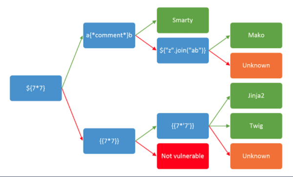

SSTI Identification
• We can detect SSTI vulnerabilities by injecting different tags in the inputs we control to see if they are evaluated in the response.
• Blind SSTI: Sometimes the injected data is not reflected in the response we receive. Sometimes it is just evaluated on different pages (blind)
Ways to detect injections ◇ supply mathematical expressions in curly brackets (easier)
{7*7}
${7*7}
#{7*7}
%{7*7}
{{7*7}} We will look for "49" in the response when injecting these payloads to identify that server-side evaluation occurred.
◇ fuzz the template by injecting combinations of special characters used in template expressions.
If an exception is caused, this means that we have some control over what the server interprets in terms of template expressions.
Tools•
Tplmap•
J2EE Scan (Burp Pro)
• create a payload list to use with Burp Intruder or ZAP
◇
https://github.com/swisskyrepo/PayloadsAllTheThings/tree/76993f86a64274629cf373cc67cd2ec4ec0232bf/Server%20Side%20Template%20Injection ◇
https://github.com/danielmiessler/SecLists/blob/master/Fuzzing/template-engines-special-vars.txtTo Identify an SSTITo identify if we are dealing with an SSTI vulnerability and also to identify the underlying template engine we can:
• use the diagram below from
PortsSwigger • Check verbose errors for technology names. Sometimes just copying the error in Google search can provide us with a straight answer regarding the underlying technology used
• Check for extensions.
◇ .jsp extensions → are associated with Java. When dealing with Java, we may be facing an expression language/OGNL injection vulnerability instead of traditional SSTI
• Send expressions with unclosed curly brackets to see if verbose errors are generated. Do not try this approach on production systems, as you may crash the webserver.
List of Specific payload for Template Engines:
• PayloadsAllTheThings:
https://github.com/swisskyrepo/PayloadsAllTheThings/tree/master/Server%20Side%20Template%20Injection#jinja2• HackTricks:
https://book.hacktricks.xyz/pentesting-web/ssti-server-side-template-injection• SecLists:
https://github.com/danielmiessler/SecLists/blob/master/Fuzzing/template-engines-special-vars.txt